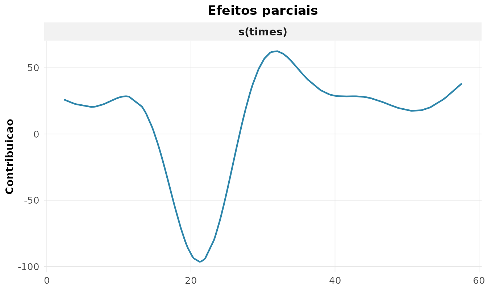

A regressão linear pressupõe resposta contínua e normal. Muitas variáveis não são assim: contagens, proporções, respostas ordinais. Os modelos lineares generalizados (GLM) estendem a regressão a respostas da família exponencial, ligando a média ao preditor linear por uma função de ligação (McCullagh and Nelder 1989; Paula 2013):
GLM para contagens (Poisson)
Para contagens, usa-se a família Poisson com ligação log, de modo que é a razão de taxas (IRR). Modelando o número de rupturas de fios em teares:
g <- rnp_glm(breaks ~ wool + tension, data = warpbreaks, familia = "poisson")
g$coeficientes
#> # A tibble: 4 × 7
#> termo estimativa erro_padrao estatistica p_valor ic_inf ic_sup
#> <chr> <dbl> <dbl> <dbl> <dbl> <dbl> <dbl>
#> 1 (Intercept) 3.69 0.0454 81.3 0 3.60 3.78
#> 2 woolB -0.206 0.0516 -3.99 0.0001 -0.307 -0.105
#> 3 tensionM -0.321 0.0603 -5.33 0 -0.439 -0.203
#> 4 tensionH -0.518 0.064 -8.11 0 -0.644 -0.393O coeficiente de tensionH
()
indica que tensão alta multiplica a taxa de rupturas por
(redução de 41%).
Verificando a adequação
O modelo Poisson supõe . Quando a variância excede a média, há superdispersão, e os erros-padrão ficam subestimados. A dispersão é estimada por :
rnp_glm_diagnosticos(g$objeto)$testes
#> # A tibble: 3 × 4
#> medida valor p_valor interpretacao
#> <chr> <dbl> <dbl> <chr>
#> 1 dispersao 4.26 NA superdispersao
#> 2 deviance/gl 4.21 NA NA
#> 3 qui-quadrado de Pearson 213. 0 falta de ajuste/superdispersaoA dispersão de 4,3 (muito acima de 1) denuncia forte superdispersão: o modelo Poisson é inadequado aqui.
Binomial negativa: corrigindo a superdispersão
A binomial negativa acrescenta um parâmetro
que acomoda a variância extra,
.
Com os dados de ausências escolares MASS::quine:
nb <- rnp_binomial_negativa(Days ~ Sex + Age, data = MASS::quine)
nb$theta
#> [1] 1.1474O é pequeno, confirmando a superdispersão; quanto menor , maior a variância extra em relação à Poisson.
Resposta ordinal: odds proporcionais
Para respostas em categorias ordenadas (baixa < média < alta satisfação), o modelo de odds proporcionais modela as probabilidades acumuladas:
rnp_regressao_ordinal(Sat ~ Infl + Type, data = MASS::housing,
pesos = MASS::housing$Freq)$coeficientes
#> # A tibble: 5 × 5
#> termo estimativa erro_padrao p_valor odds_ratio
#> <chr> <dbl> <dbl> <dbl> <dbl>
#> 1 InflMedium 0.548 0.104 0 1.73
#> 2 InflHigh 1.24 0.126 0 3.45
#> 3 TypeApartment -0.522 0.118 0 0.594
#> 4 TypeAtrium -0.289 0.153 0.0592 0.749
#> 5 TypeTerrace -1.01 0.150 0 0.363A razão de chances de InflHigh é
:
morar onde se percebe alta influência sobre a gestão multiplica por 3,4
a chance de estar em uma categoria de satisfação superior.
Modelos mistos: dados agrupados
Quando há medidas repetidas ou agrupamento (alunos em escolas,
medidas em indivíduos), as observações não são independentes. O
modelo misto separa a variação em efeitos fixos e
aleatórios:
.
Usando o crescimento dental nlme::Orthodont:
mm <- rnp_modelo_misto(distance ~ age, data = nlme::Orthodont,
aleatorio = ~ 1 | Subject)
mm$variancia
#> # A tibble: 3 × 2
#> componente variancia
#> <chr> <dbl>
#> 1 aleatorio 4.47
#> 2 residuo 2.05
#> 3 ICC 0.686A correlação intraclasse (ICC) de indica que 69% da variância está entre indivíduos — ignorar esse agrupamento (ajustando um modelo comum) subestimaria os erros-padrão.
Modelos aditivos (GAM): relações não-lineares
Quando o efeito de um preditor não é linear, o GAM o substitui por uma função suave estimada dos dados (Wood 2017):
Com os dados clássicos de aceleração em colisão de motocicleta
MASS::mcycle:
gm <- rnp_gam(accel ~ s(times), data = MASS::mcycle)
gm$suaves
#> # A tibble: 1 × 4
#> termo edf estatistica p_valor
#> <chr> <dbl> <dbl> <dbl>
#> 1 s(times) 8.69 53.5 0Os graus de liberdade efetivos (edf) de
8,7 revelam uma relação fortemente não-linear — um
polinômio de baixa ordem jamais a capturaria. O efeito suave:

Síntese
| Situação | Função | Família/modelo |
|---|---|---|
| Contagens | rnp_glm |
Poisson (log) |
| Contagens superdispersas | rnp_binomial_negativa |
binomial negativa |
| Resposta binária | rnp_glm |
binomial (logit) |
| Resposta ordinal | rnp_regressao_ordinal |
odds proporcionais |
| Dados agrupados | rnp_modelo_misto |
efeitos mistos |
| Efeito não-linear | rnp_gam |
aditivo (suavizadores) |
O diagnóstico é central: foi a dispersão estimada que revelou a inadequação do Poisson e motivou a binomial negativa.